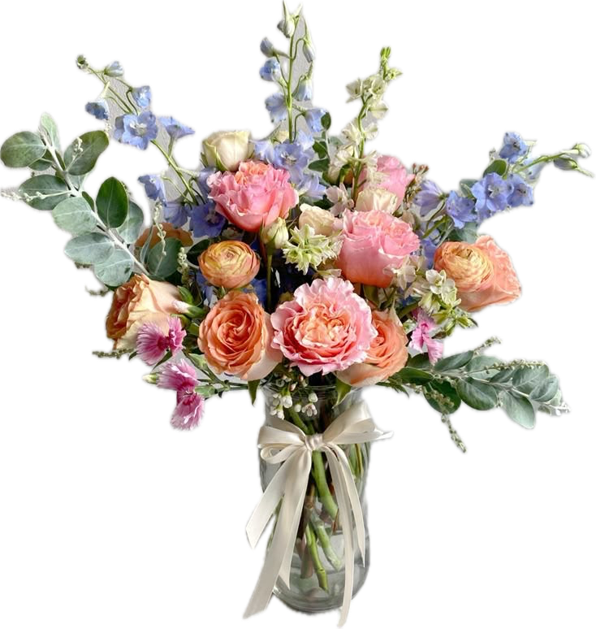
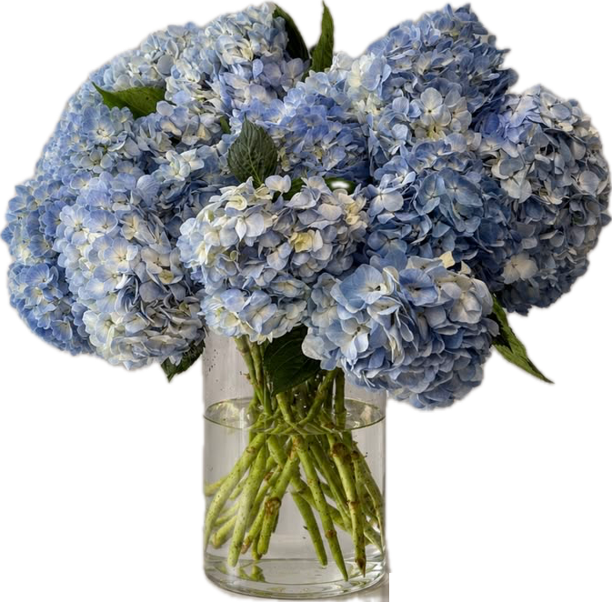
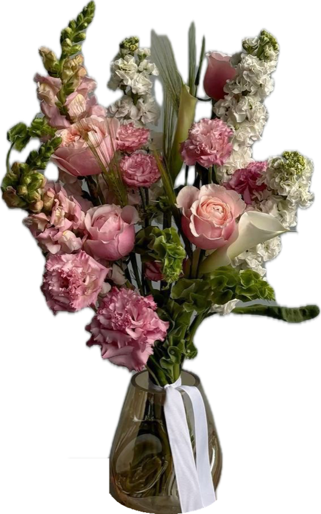

Мы подготовили отчёт по проделанной работе. Расписали показатели, объяснили всё простым языком и указали на точки роста.
Продажи считаем с 5 октября: с этого дня заявки сайта сохраняются и сверены с amoCRM. Сентябрьские продажи в отчёт не вошли.
Мы запустили контекстную рекламу на новый сайт, который разработали для вас. SEO-выдача сайта ещё не набрала ход, поэтому практически все заявки с сайта мы относим к Яндекс Директу.
Сайт новый и запущен вместе с рекламой. Других источников трафика у него пока нет.
SEO нужны месяцы. Из бесплатного поиска Яндекса пришло всего 3% заходов.
79% заходов по рекламе. Почти все попадают на сайт, нажав на объявление.
Постоянные клиенты пишут в личку. Кто уже покупал, сразу идёт в мессенджер, а не на сайт.

Лучшее подтверждение, что сайт продаёт через рекламу. В неделю с 12 октября у Яндекса не работали дата-центры: пополнить рекламный кабинет было невозможно, и реклама почти перестала показываться, хотя кампании мы поддерживали. Заходов на сайт сразу стало 156 вместо 688 неделей раньше. Как только Директ заработал, вернулись и заходы, и активность на сайте.
В начале месяца люди получают зарплату, в конце месяца больше праздников и дней рождения. Это влияет на спрос, но связь заходов с работой Директа видна однозначно.

Это очень хороший результат. Мы сверили каждую заявку с сайта со сделками в amoCRM по номеру заявки и телефону. С 7 октября все заявки доходят до менеджеров, ни одна не потерялась.
С 7 октября по 3 ноября 2026. 17 покупателей сделали 18 оплат.
Половина оставляет заявку на сайте, а заказ оформляет в переписке с менеджером: уточняет состав, открытку и время доставки.
С 7 октября по 3 ноября, когда все заявки уже доходили до CRM.
Клик стоит в среднем 21 ₽, на объявления нажимают 4,19% тех, кто их видит. Значит, объявления точно попадают в запрос. Но сами по себе эти цифры ничего не приносят: клики могут быть очень дешёвыми, а покупок не будет. Или дорогими, зато покупает каждый второй.
Поэтому мы оцениваем рекламу по продажам и стоимости продажи, а клики и CTR используем только как подсказку для настройки.
Самые популярные запросы, после которых люди клали букет в корзину, оставляли заявку или покупали. Запросы без результата мы отключаем и сюда не включали.
| Запрос | Заходы | Корзина | Заявка | Покупки | Конверсия |
|---|---|---|---|---|---|
| Автотаргетинг | 965 | 49 | 29 | 3 | 8,1% |
| цветы Самара | 240 | 12 | 7 | 1 | 7,9% |
| цветочный салон | 30 | 1 | 4 | 1 | 16,7% |
| цветочный магазин самара | 85 | 3 | 4 | · | 8,2% |
| магазин цветов самара | 66 | 4 | 2 | · | 9,1% |
| заказать цветы самара | 59 | 2 | 1 | · | 5,1% |
| купить розы, заказать розы | 59 | 2 | 2 | · | 6,8% |
Конверсия: доля заходов, которые закончились корзиной или заявкой. Покупки: оплаты через корзину сайта, которые Метрика связала с запросом.
Что это. Обычно мы сами задаём фразы, по которым показывается реклама. При автотаргетинге Яндекс сам подбирает запросы по содержанию сайта и объявлений. Он находит людей, которые ищут цветы своими словами: «оригинальный букет на день рождения», «цветы самара доставка».
Сейчас мы точно видим продажи с сайта, у нас хорошая конверсия и дешёвые клики. Для первого месяца, да ещё со сбоем дата-центров Яндекса, это очень хорошие показатели.
Дальше работаем над удержанием клиентов, над LTV, то есть сколько денег клиент приносит за всё время, и над ростом среднего чека.
Предлагаем к букету открытку, сладости, вазу, показываем на сайте букеты дороже на самых видных местах. Каждый рубль сверху к чеку окупает рекламу быстрее.
В октябре 52% выручки дали клиенты, которые уже покупали. Загружаем 3 927 номеров из базы во ВКонтакте и Яндекс, напоминаем о себе к праздникам и находим похожих покупателей.
На сайте подменяется номер телефона, и каждый звонок с рекламы попадает в CRM с источником и запросом.
Номер телефона из переписки сопоставляем со сделками в CRM, чтобы видеть реальное количество продаж с рекламы, а не только оплаты на сайте.
Договариваемся, чтобы менеджеры тегировали каждую сделку: откуда пришёл клиент и где оплатил. Тогда отчёт о продажах собирается сам, без ручной сверки.
Отключаем запросы и площадки без заявок, усиливаем запросы с покупками, переводим кампании на оптимизацию по оплатам и добавляем бюджет туда, где продажа дешевле.

Следующий отчёт покажет звонки и продажи из мессенджеров, и мы увидим полную картину.